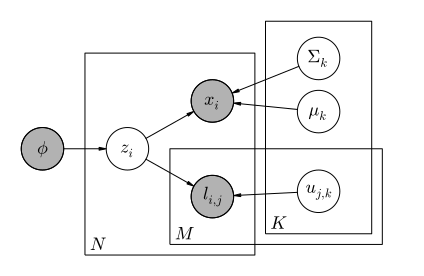
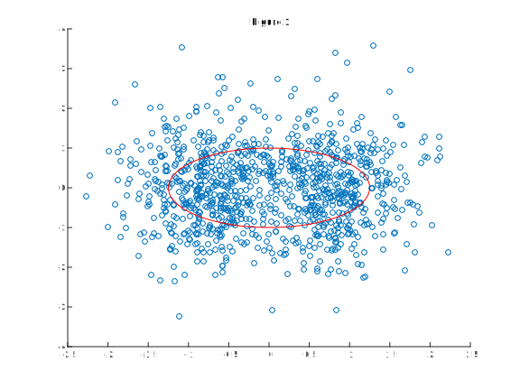
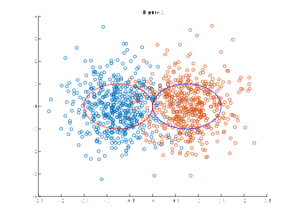

Gaussian mixture models are an effective way to learn clusters of normally distributed data fully unsupervised, however, labeled examples will invariably produce better results faster. While it is often impractical or expensive to obtain human labeling, many platforms' users are willing to exert minimal effort to like or dislike an entry. To utilize this data we present a variation on Gaussian mixture models that prefers clusterings with fewer conflicting likes/dislikes.
Consider a platform that allows users to view a sufficiently large number of entries of some kind. For example videos or recipes. When tasked with clustering these entries, a common approach is to transform attributes of the entries into continuous n-dimensional space and use unsupervised clustering algorithms like Gaussian mixture models or k-means. While these techniques work well enough in many cases, labeled examples will invariably produce better results faster.
Unfortunately, in many cases platform restrictions may make obtaining labeled data from humans impractical or expensive. Many platforms, however, are able to obtain significant amounts of like/dislike data. Users are often willing or even motivated to press a button to express their general satisfaction/dissatisfaction. How can such data be incorporated when learning features more intricate than “like clusters” and “dislike clusters”.
As a motivating example, figure 1 appears to be made from a single mixture component, however the likes/dislikes tell a different story. Many users tend to like either things on the left or things on the right. Intuitively, this suggests a model with two overlapping components. Figure 2 is a coloring of the exact same dataset that represents this. We can loosely quantify this intuition in terms of purity. Ideally all clusters should be pure in that any given user will either like or dislike every example in a cluster.
A pure cluster can be viewed as representing not only a meaningful region the attribute space, but also a shared sentiment towards entries in that region, positive or negative. We accomplish this by incorporating a representation of user sentiment in the model. In this work we will rigorously define a variation on Gaussian mixture model and subsequently present how to perform statistical inference on the model using expectation-maximization.
Let \(x_1\ldots x_N\) be entries in a given domain. Additionally, let \(u_1\ldots u_M\) be users in the domain. For each entry \(x_i\) and user \(u_j\)…
\[ l_{i,j} = \begin{cases} 1 & \text{if } u_j\text{ likes } x_i\\ 0 & \text{if } u_j\text{ dislikes } x_i \end{cases} \]
Mixture components \(k\) are normally distributed with parameters \(\mu_k\) and \(\Sigma_k\). Entries \(x_i\) are generated according to the following generative process. The component from which \(x_i\) will be generated, \(z_i\) is drawn from the categorical distribution with parameter \(\mathbf\phi\). \(\mathbf\phi\) represents the overall proportion of entries generated by each component. \(x_i\) is drawn from the multivariate normal distribution with parameters \(\mu_{z_i}\) and \(\Sigma_{z_i}\).
A second observed quantity, user likes/dislikes is also generated by the model. Let \(u_{j,k}\) be a scalar parameter representing the affinity of \(u_j\) for component \(k\). \(l_{i,j}\) is then drawn from the Bernoulli distribution with parameter \(u_{j,z_i}\). Notice that \(u_{j,z_i}\) represent user preference and are not what we set out to find. By performing statistical inference on the model, we learn a representation of user preference as well as mixture component parameters. Though outside the scope of this work, this could potentially have applications in learning user traits.
To discuss the intuition for this model, examine figure 3, the model displayed in plate notation. \(l_{i,j}\) is only directly dependent on \(z_i\) and \(u_{j,k}\). This makes the assumption that user likes/dislikes are based off the class alone, not the attributes of the entry itself. Making this assumption not only reduces the complexity of the model, but will make the maximum likelihood estimate favor purity because users and entries can only be dependent via the mixture component.
Figure 3
Consider the example from figures 1 and 2. Suppose that user \(u_A\) likes entries on the right but dislikes entries on the left. If a mixture component \(k\) is centered as in figure 1, then while the probability of entries \(x_i\) may be high both on the left and the right, there exists no \(u_{A,k}\) that can generate likes on the right and dislikes on the left with high probability. Thus we see that a maximum likelihood estimate far prefers two off-center mixture componenets as in figure 2. The model is formally stated as follows…
\[ \begin{align*} \mathbf\phi &\equiv \text{Global proportion of components}\\ z_i &\sim \text{Categorical}(\mathbf\phi)\\ \mu_k &\equiv \text{Mean of component }k\\ \Sigma_k &\equiv \text{Covariance matrix of component }k\\ x_i &\sim \text{Normal}(\mu_{z_i},\Sigma_{z_i})\\ u_{j,k} &\equiv \text{Affinity of }u_j \text{ for component }k\\ l_{i,j} &\sim \text{Bernoulli}(u_{j,z_i})\\ \end{align*} \]Let \(X\equiv \{x_i: i\in 1\ldots N\}\), \(L\equiv \{l_{i,j}: i\in 1\ldots N, j\in 1\ldots M\}\), and \(Z\equiv \{z_i: i\in 1\ldots N\}\). Additionally let \(\mu\equiv \{\mu_k: k\in 1\ldots K\}\), \(\Sigma\equiv \{\Sigma_k: k\in 1\ldots K\}\), and \(u\equiv \{u_{j,k}: j\in 1\ldots M, k\in 1\ldots K\}\). By finding the maximum likelihood estimate of the model we learn parameters that describe data with the highest probability.
\[ \DeclareMathOperator*{\argmax}{arg\,max} \argmax_{\mu,\Sigma,u,\mathbf\phi}p(X,L\mid\mu,\Sigma,u,\mathbf\phi) \]Equivalently, we can maximize the log-likelihood function \(\mathcal{L}\) because \(\log\) is monotonically increasing.
\[ \begin{align*} \mathcal{L}(\mu,\Sigma,u,\mathbf\phi;X,L)&= \log{p(X,L\mid\mu,\Sigma,u,\mathbf\phi)}\\ &= \log{\prod_{i\in 1\ldots N}{p(x_i,l_{i,1},\ldots,l_{i,M}\mid\mu,\Sigma,u,\mathbf\phi)}}\\ &= \sum_{i\in 1\ldots N}{\log{p(x_i,l_{i,1},\ldots,l_{i,M}\mid\mu,\Sigma,u,\mathbf\phi)}}\\ &= \sum_{i\in 1\ldots N}{\log\sum_{k\in 1\ldots K}{\left[{p(x_i,l_{i,1},\ldots,l_{i,M}\mid\mu,\Sigma,u,\mathbf\phi,z_i=k)p(z_i=k\mid\mu,\Sigma,u,\mathbf\phi)}\right]}}\\ \end{align*} \]However directly maximizing the likelihood function via differentiation is intractable. Instead we use expectation-maximization (EM), an iterative approach to learning the parameters. In this model observed quantities are \(X\) and \(L\). Latent/unobserved quantities are \(Z\), and parameters are \(\mu\), \(\Sigma\), and \(u\). First we compute the complete likelihood function \(\mathcal{L}_c\).
\[ \begin{align*} \mathcal{L}_c(\mu,\Sigma,u,\mathbf\phi;X,L,Z)&= \log{p(X,L,Z\mid\mu,\Sigma,u)}\\ &= \log{\prod_{i\in 1\ldots N}{p(x_i,l_{i,1},\ldots,l_{i,M},z_i\mid\mu,\Sigma,u,\mathbf\phi)}}\\ &= \sum_{i\in 1\ldots N}{\log{p(x_i,l_{i,1},\ldots,l_{i,M},z_i\mid\mu,\Sigma,u,\mathbf\phi)}}\\ &= \sum_{i\in 1\ldots N}{\log\left[{p(x_i,l_{i,1},\ldots,l_{i,M}\mid z_i,\mu,\Sigma,u,\mathbf\phi)p(z_i\mid\mu,\Sigma,u,\mathbf\phi)}\right]}\\ &= \sum_{i\in 1\ldots N}{\left[\log{p(x_i,l_{i,1},\ldots,l_{i,M}\mid z_i,\mu,\Sigma,u,\mathbf\phi)}+\log{p(z_i\mid\mu,\Sigma,u,\mathbf\phi)}\right]}\\ &= \sum_{i\in 1\ldots N}{\sum_{k\in 1\ldots K}{\mathbb{1}_{\{z_i=k\}}\left[\log{\phi_k}+\log{p(x_i\mid \mu_k,\Sigma_k)+\sum_{j\in 1\ldots M}{\log{p(l_{i,j}\mid u_{j,k})}}}\right]}}\\ \end{align*} \]At each expectation step \(t\), compute \(Q\) the conditional expectation of \(\mathcal{L}_c\) given observed data \(X\), \(L\) and the current estimation of parameters \(\mu^{(t)}\), \(\Sigma^{(t)}\), and \(u^{(t)}\). This allows us to account for not having values for \(z_i\)
\[ \begin{align*} &Q(\mu,\Sigma,u,\mathbf\phi\mid\mu^{(t)},\Sigma^{(t)},u^{(t)},\mathbf\phi^{(t)})\\ =&E{\left[\sum_{i\in 1\ldots N}{\sum_{k\in 1\ldots K}{\mathbb{1}_{\{z_i=k\}}\left[\log{\phi_k}+\log{p(x_i\mid \mu_k,\Sigma_k)+\sum_{j\in 1\ldots M}{\log{p(l_{i,j}\mid u_{j,k})}}}\right]}}\mid X,L,\mu^{(t)},\Sigma^{(t)},u^{(t)},\mathbf\phi^{(t)}\right]}\\ =&\sum_{i\in 1\ldots N}{\sum_{k\in 1\ldots K}{E{\left[\mathbb{1}_{\{z_i=k\}}\mid X,L,\mu^{(t)},\Sigma^{(t)},u^{(t)},\mathbf\phi^{(t)}\right]\left[\log{\phi_k}+\log{p(x_i\mid \mu_k,\Sigma_k)+\sum_{j\in 1\ldots M}{\log{p(l_{i,j}\mid u_{j,k})}}}\right]}}}\\ \end{align*} \] \[ \begin{align*} h_k^i=E{\left[\mathbb{1}_{\{z_i=k\}}\mid X,L,\mu^{(t)},\Sigma^{(t)},u^{(t)},\mathbf\phi^{(t)}\right]}&=p(z_i=k\mid X,L,\mu^{(t)},\Sigma^{(t)},u^{(t)})\\ &=\frac{p(x_i,l_{i,1},\ldots,l_{i,M}\mid z_i=k,\mu^{(t)},\Sigma^{(t)},u^{(t)})\phi_k}{p(x_i,l_{i,1},\ldots,l_{i,M}\mid\mu^{(t)},\Sigma^{(t)},u^{(t)},\mathbf\phi^{(t)})}\\ &=\frac{p(x_i,l_{i,1},\ldots,l_{i,M}\mid z_i=k,\mu^{(t)},\Sigma^{(t)},u^{(t)},\mathbf\phi^{(t)})\phi_k}{\sum_{k'\in 1\ldots K}{p(x_i,l_{i,1},\ldots,l_{i,M}\mid z_i=k',\mu^{(t)},\Sigma^{(t)},u^{(t)},\mathbf\phi^{(t)})\phi_{k'}}}\\ \end{align*} \] \[ p(x_i,l_{i,1},\ldots,l_{i,M}\mid z_i=k,\mu^{(t)},\Sigma^{(t)},u^{(t)},\mathbf\phi^{(t)})=p(x_i\mid\mu_k^{(t)},\Sigma_k^{(t)})\prod_{j\in 1\ldots M}p(l_{i,j}\mid u_{j,k}^{(t)})=g_k^i \] \[ h_k^i=\frac{g_k^i}{\sum_{k'\in 1\ldots K}g_{k'}^i} \]\(h_k^i\) can be seen as a measurement of example \(x_i\) belonging to class \(k\) under the current estimation of parameters. The probabilities of \(x_i\) and \(l_{i,j}\) conditioned on parameters can be simply calculated from the Normal and Bernoulli PDFs respectively.
\[ Q(\mu,\Sigma,u,\mathbf\phi\mid\mu^{(t)},\Sigma^{(t)},u^{(t)},\mathbf\phi^{(t)})=\sum_{i\in 1\ldots N}{\sum_{k\in 1\ldots K}{h_k^i\left[\log{\phi_k}+\log{p(x_i\mid \mu_k,\Sigma_k)+\sum_{j\in 1\ldots M}{\log{p(l_{i,j}\mid u_{j,k})}}}\right]}} \]In the maximization step we differentiate to find maximizing values for \(Q\) and update the parameters accordingly.
\[ \mu^{(t+1)},\Sigma^{(t+1)},u^{(t+1)},\mathbf\phi^{(t+1)}=\argmax_{\mu,\Sigma,u,\mathbf\phi}{Q(\mu,\Sigma,u,\mathbf\phi\mid\mu^{(t)},\Sigma^{(t)},u^{(t)},\mathbf\phi^{(t)})} \]For \(\mathbf\phi\), this is easy. The proportion of entries generated by each class will achieve maximum probability when it reflects the apparent proportion suggested by the current estimation of parameters.
\[ \nabla_{\mathbf\phi}Q(\mu,\Sigma,u,\mathbf\phi\mid\mu^{(t)},\Sigma^{(t)},u^{(t)},\mathbf\phi^{(t)})=\nabla_{\mathbf\phi}\sum_{i\in 1\ldots N}{\sum_{k\in 1\ldots K}{h_k^i\log{\phi_k}}}=0\\ \phi_k^{(t+1)}=\frac{\sum_{i\in 1\ldots N}h_k^i}N \]For the Gaussian component parameters, simply compute statistics over the data (weighted by \(h_k^i\), example \(x_i\)'s probability of being generated by component \(k\).
\[ \nabla_{\mu,\Sigma}Q(\mu,\Sigma,u,\mathbf\phi\mid\mu^{(t)},\Sigma^{(t)},u^{(t)},\mathbf\phi^{(t)})=\nabla_{\mu,\Sigma}\sum_{i\in 1\ldots N}{\sum_{k\in 1\ldots K}{h_k^i\log{p(x_i\mid \mu_k,\Sigma_k)}}}=0\\ \begin{align*} \mu_k^{(t+1)}&=\frac{\sum_{i\in 1\ldots N}h_k^ix_i}{\sum_{i\in 1\ldots N}h_k^i}\\ \Sigma_k^{(t+1)}&=\frac{\sum_{i\in 1\ldots N}h_k^i(x_i-\mu_k^{t+1})(x_i-\mu_k^{t+1})^T}{\sum_{i\in 1\ldots N}h_k^i}\\ \end{align*} \]Finally we perform a similar computation for each user \(u_j\).
\[ \nabla_{u_j}Q(\mu,\Sigma,u,\mathbf\phi\mid\mu^{(t)},\Sigma^{(t)},u^{(t)},\mathbf\phi^{(t)})=\nabla_{u_j}\sum_{i\in 1\ldots N}{\sum_{k\in 1\ldots K}h_k^i{\log{p(l_{i,j}\mid u_{j,k})}}}=0 \]Observe that this is the probability that M independent Bernoulli trials produce likes/dislikes \(l_{i,j}\) weighted by h_k^i. This achieves maximum probability when parameterized with the weighted proportion of likes to dislikes.
\[ u_{j,k}^{(t+1)}=\frac{\sum_{i\in 1\ldots N}h_k^il_{i,j}}{\sum_{i\in 1\ldots N}h_k^i} \]In this work we have presented a variation on Gaussian mixture models that incorporates user likes/dislikes and subsequently derived the procedure for maximum likelihood estimation via expectation-maximization. This model was originally conceived to cluster recipies into groups that represent similar tastes. The hope is that this model would capture features of recipes too minute to learn without user data.
The next step for this project would be to test the model on a contrived dataset. Interesting contrived datasets to examine would have closely spaced clusters that might be mistaken for a single cluster, but differing strengths of opinion among the users. Additionally it would be interesting to study the effect of different starting guesses for the parameters.